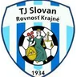
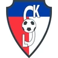
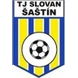
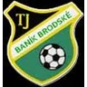
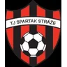

TJ Jednota Brestovec
VI. liga Západ, ročník 2026/27. Víťaz VII. ligy ObFZ Trenčín 2023/24, futbal v Brestovci od roku 1951.
Rozpis áčka
Všetky zápasy aj prípravky
VI. liga Západ
| # | Tím | Z | V | R | P | Skóre | B |
|---|---|---|---|---|---|---|---|
| 1 | 14 | 11 | 2 | 1 | 48:18 | 35 | |
| 2 | 14 | 9 | 1 | 4 | 37:21 | 28 | |
| 3 |  TJ Slovan Rovnosť Krajné | 14 | 8 | 3 | 3 | 46:28 | 27 |
| 4 | 14 | 8 | 2 | 4 | 31:22 | 26 | |
| 5 | TJ Slovan Dubovce | 14 | 8 | 2 | 4 | 24:14 | 26 |
| 6 | 14 | 8 | 1 | 5 | 41:28 | 25 | |
| 7 | 14 | 7 | 3 | 4 | 28:26 | 24 | |
| 8 |  TJ Sokol Borský Mikuláš | 14 | 6 | 3 | 5 | 24:22 | 21 |
| 9 |  TJ Slovan Šaštín-Stráže | 14 | 4 | 5 | 5 | 22:28 | 17 |
| 10 |  TJ Baník Brodské | 14 | 5 | 1 | 8 | 20:32 | 16 |
| 11 |  TJ Spartak Šaštín-Stráže | 14 | 5 | 1 | 8 | 29:31 | 16 |
| 12 | 14 | 4 | 2 | 8 | 26:51 | 14 | |
| 13 | 14 | 4 | 1 | 9 | 22:33 | 13 | |
| 14 | 14 | 2 | 1 | 11 | 16:39 | 7 | |
| 15 | TJ Slavoj Moravský Svätý Ján | 14 | 2 | 0 | 12 | 14:35 | 6 |